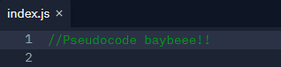
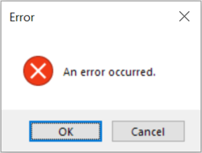

Problem Solving
Our technical topic for this week’s blog is Problem-Solving.
I’ve always been pretty confident in my problem-solving abilities. Although if anyone were to ask why or needed advice on the subject, I don’t think I would be able to give them a very good answer.
Researching problem-solving techniques and methods was like putting names to familiar faces, now I feel like I can do a decent job of giving problem-solving advice. So, let’s look at some of these methods:
Pseudocode
This is where you write out in plain English (plain enough for yourself anyway) what steps you need to take in order to achieve the intended result. You can comment this into your code as well, so it’s just a glance away and other devs can see what your intentions were.
I myself found this very helpful especially when taking a break between study sessions. Code hasn’t quite clicked in my brain just yet so seeing an English translation of what I should be trying to do is a great help.
This pseudocode acts as a draft or roadmap for you to start on and can be adjusted as needs be.
Rubber Ducky Method
I had some wild ideas of what the rubber ducky method might involve before actually researching it, but none as wild as the actual method. You just talk, really. Explain to the rubber duck what it is you are trying to do and what is happening step by step.
For me, the act of talking through it (even to inanimate objects) seems to help me pinpoint the pain areas in my code. Looking at a scrolling wall of code, it’s hard to find exactly where it goes wrong, but as you talk it out with ducky it all becomes clear. Don’t knock it till you try it.
Reading Error Messages
This is something that has been drilled into me through previous work experience so it’s become almost second nature but it’s usefulness cannot be understated. Read the error message. The messages themselves come in varying degrees of helpful, so don’t immediately discard it if you don’t understand it. Look out for a keyword and try and trace it back, take that message and throw into Google, see how everyone else handled it.